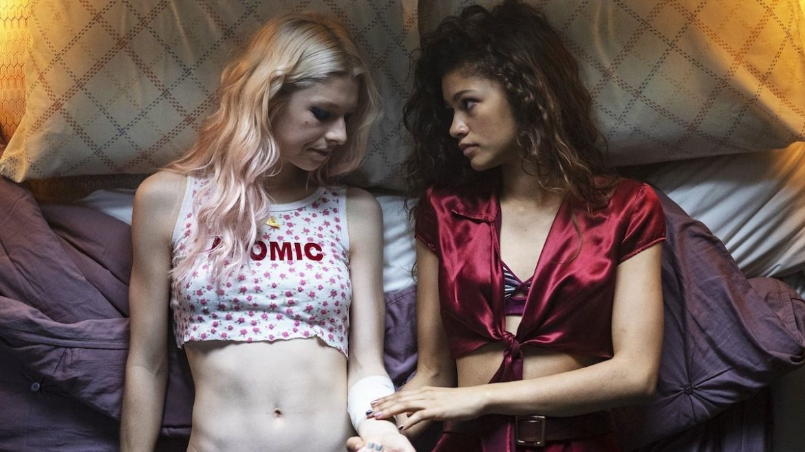

15th December 2019

I wanted to write this blog as it is about something that gave me a lot of hope and positivity which is what we all need especially when we make the mistake of doubting ourselves. I was touched and inspired in a much needed way and I hope that it may be able to do the same for anyone else out there searching for any light. The Program is Euphoria and I came across this quite by chance, though as I understand there are no mistakes in this universe so paradoxically I believe it was meant to cross my path. I was impacted so by the program and its content that it gave me a hope or an idea of what life could be and it filled me with joy to the point that I have been telling everyone I know to watch this program. I was drawn to this program as I am a big fan of Zendaya after her performance in The Greatest Showman, and all I can say is I am pleased I did. The program is set around a number of teenagers and their navigation through the complexities of modern life. The program is honest, gritty and wonderfully produced.
Spoiler alert....
Now there are two big points for me as to why this program had such an impact on me; the first is they do not shout about the Character Jules being Transgender, she is just another character, and is accepted in such a way that throughout the majority of the series it is not the topic. It is beautifully refreshing that she is treated as a person and we don’t see any real coverage on justifying why she just is. It feels like a step forward as there is no request for the audiences approval, it is just so. It is the next step in the evolution and integration where we have got beyond the obvious and repetitive questions as to why and what it is all about. She is just another girl. Now they do address her being transgender in the course of the show but it is not the sole focus and that is one thing that made me feel hopeful for the future.
At the end of the first episode you discover that one of the characters called Jules is Transgendered. I pride myself in being able to notice or spot a transgender girl no matter how convincing, but in this case I was taken aback as I was not expecting it at all. I thought this was just about one characters battle with drugs, but I learnt it is so much more and there is more than one character that is developed.
The second point that I want to make is about the character Jules and the actress who plays her Hunter Schaffer. Both are wonderfully beautiful souls who inspire not only the transgender community but I have seen on many YouTube video comments just what a positive impact she has had on the wider community. I understand Hunter helped to write the character of Jules which is why it feels so authentic and well done.
I guess I cannot fully articulate what this programme did for me, but it certainly gave me courage and belief that I can move forward and not just exist as Natasha but make a positive difference too. My recommendation is to watch Euphoria which did screen on Sky Atlantic, and if you can try to watch some youtube video interviews with Hunter Schaffer and observe the positivity she is attracting via the comments. I hope this has been helpful for those reading as it was for me. Stay positive and remember to love yourselves.
Natasha
xxx
If you would like to donate to facilitate new content please click the button below
Contact Details: lifetogo@live.co.uk